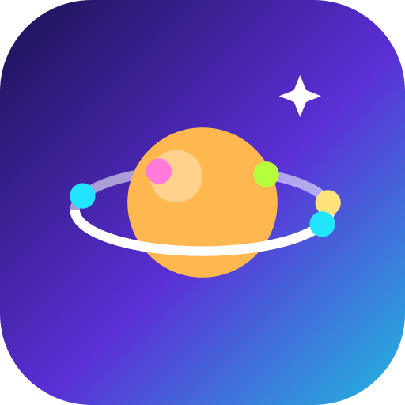

Top picks
Applications
Kept on this device only; nothing is uploaded. Export backup keeps a copy or moves it to another device.

Latent SpaceAI · ML · Physics✦ fresh AI/ML openings every morning for Kartik Khurana ✦
Sampling the latent space…
Where to next?

Kept on this device only; nothing is uploaded. Export backup keeps a copy or moves it to another device.